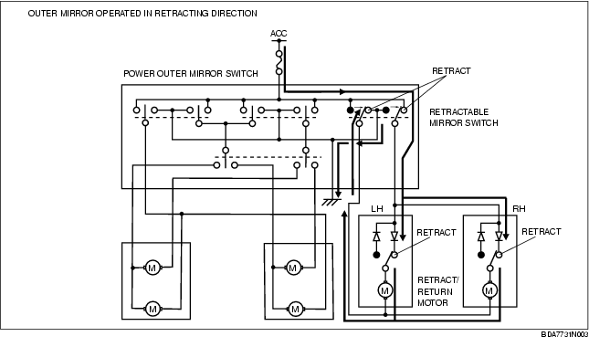

POWER OUTER MIRROR OPERATION
id091200007300
Retract/Return
• When the retractable mirror switch is moved to the retract position, a circuit is established, and the retract/return motor rotates in the retracting direction.
• During return operation, the motor rotates in the opposite (returning) direction.
